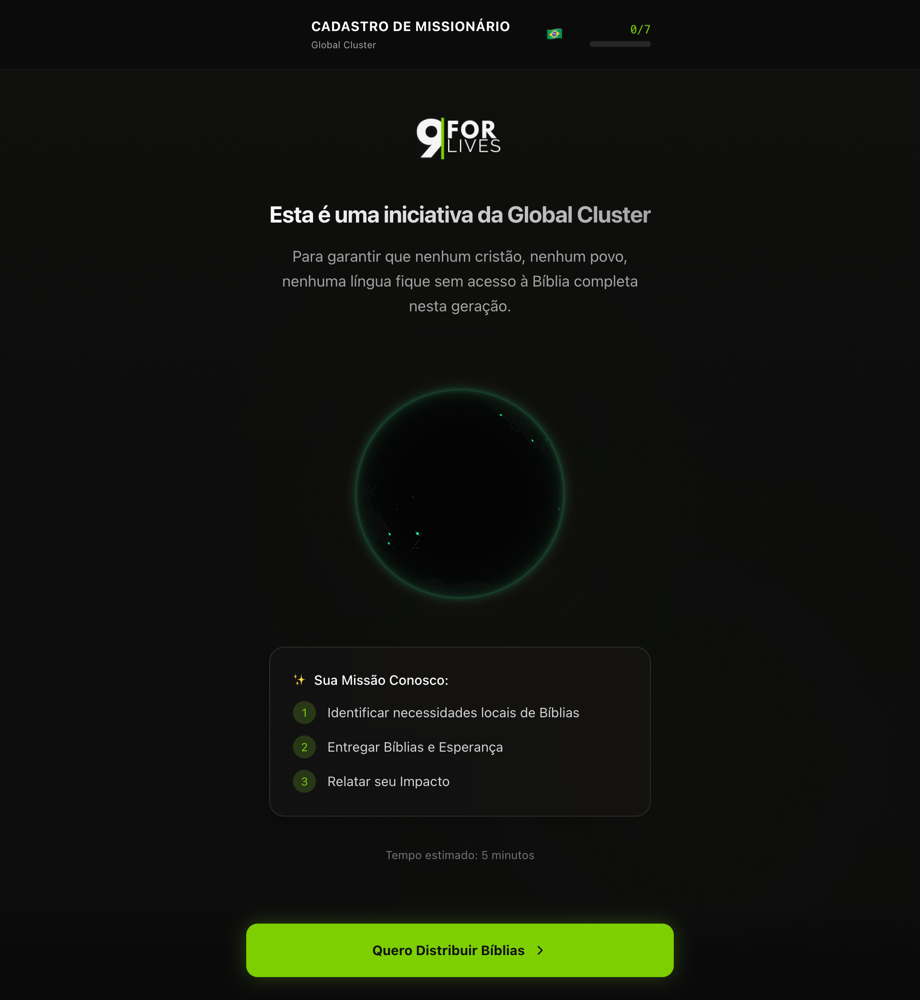
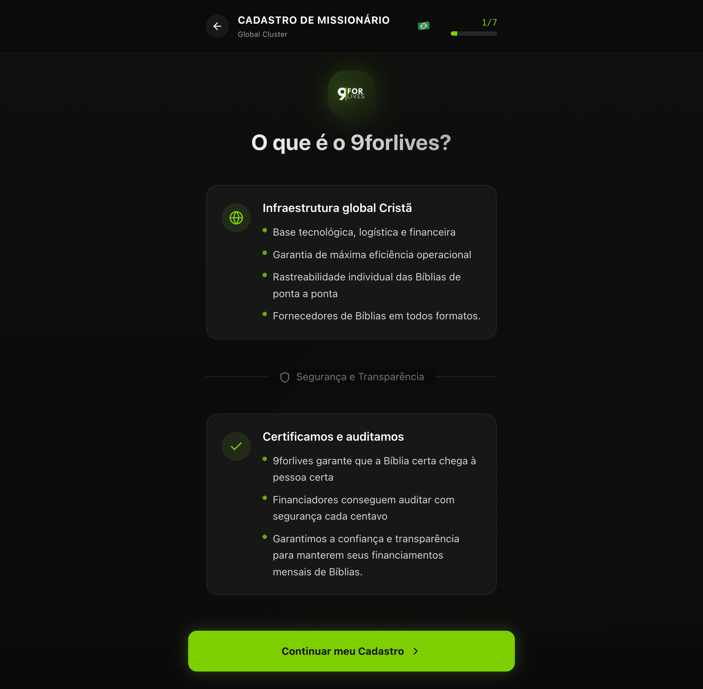
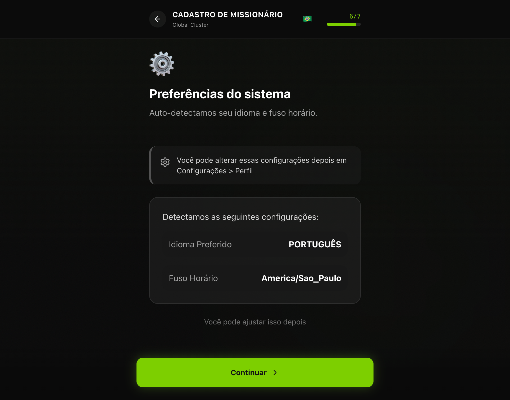

Playbook de Cadastro de Novos Missionários
Guia oficial para o processo completo de onboarding de missionários na plataforma 9forLives.
O Que Esperamos do Missionário
O missionário da 9forLives é um agente transformador comprometido com a missão de impactar vidas através da tecnologia e da Palavra.
Compromisso
Dedicação sincera aos objetivos da organização.
Integridade
Honestidade em todas as operações e registros.
Resiliência
Firmeza diante dos desafios no campo.
Fluxo de Cadastro
O formulário de cadastro é estruturado em 8 etapas principais que coletam informações progressivas.
Boas-vindas
Introdução à visão 9forLives.
Dados Pessoais
Identidade e acesso.
Localização
Onde as Bíblias serão entregues.
Afiliação
Conexão com a comunidade de fé.
Propósito
Sua motivação e áreas de interesse.
Preferências
Configurações automáticas do sistema.
Documentos
Validação de identidade.
Conclusão
Ativação da conta.
Detalhes do Formulário
A primeira tela apresenta a visão da 9forLives. É o momento de alinhamento espiritual e operacional.
O que fazer
Leia atentamente os termos de compromisso e a introdução ao sistema.
Por que importa
Garante que todos os missionários estejam na mesma página quanto aos valores da organização.

Criação da sua identidade digital na plataforma. Estes dados serão usados para toda a sua comunicação oficial.
- Nome Completo: Deve ser idêntico ao seu documento oficial.
- E-mail: Use um e-mail que você acessa diariamente; será seu login.
- WhatsApp: Essencial para coordenação logística rápida.
- Senha: Crie uma senha forte (mínimo 8 caracteres) e guarde-a com segurança.

Regra Crítica: O Hub Logístico
O endereço cadastrado aqui é para onde as Bíblias financiadas serão enviadas. Ele deve ser um local seguro, com alguém disponível para receber em horário comercial.
O sistema utiliza o seu CEP para calcular rotas e prazos de entrega automáticos para os doadores.

A 9forLives atua em parceria com o corpo de Cristo. Precisamos entender sua conexão com a igreja local.
Informe o nome da sua denominação, o nome do seu pastor/líder direto e um contato de referência. Isso faz parte do nosso processo de compliance e segurança espiritual.

Defina seu campo de atuação. Onde você pretende concentrar seus esforços de evangelismo?
Foco Geográfico
Indique os bairros ou regiões específicas onde você já possui trabalho ativo.
Motivação
Um breve relato sobre por que você deseja ser um missionário 9forLives.

Configure como o sistema deve se comportar para você.
Você pode definir preferências de idioma, notificações por e-mail e como deseja visualizar as requisições pendentes no seu dashboard.

Para garantir a integridade da rede, validamos a identidade de todos os agentes.
Documentos Aceitos
RG, CNH ou Passaporte. A foto deve estar nítida e todos os dados legíveis. Documentos expirados ou ilegíveis causarão atraso na aprovação.

Seu cadastro foi enviado para análise pela nossa equipe de moderação.
O que acontece agora?
1. Nossa equipe revisará seus dados e documentos (prazo médio: 48h).
2. Você receberá um e-mail de confirmação assim que for aprovado.
3. Após a aprovação, seu dashboard será liberado para cadastrar beneficiários.

O Dashboard de Missionário
Após a aprovação, você terá acesso ao seu centro de comando operacional.
Gestão de Vidas
Cadastre beneficiários e acompanhe o status de cada um.
Logística
Rastreie o envio de Bíblias até sua base.
Checklist Pré-Missão
- Cadastro 100% concluído
- Documentos enviados e validados
- Endereço logístico confirmado